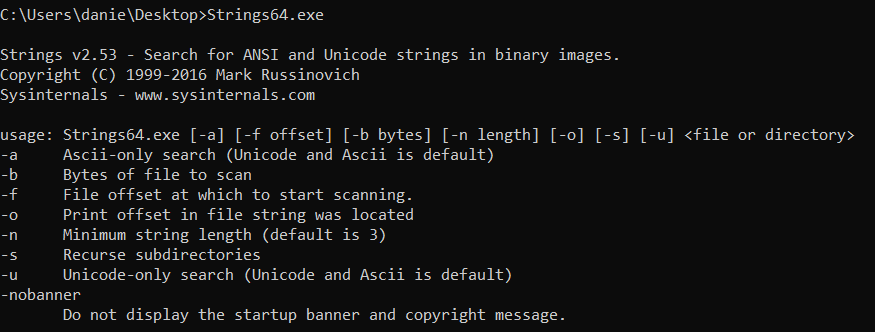
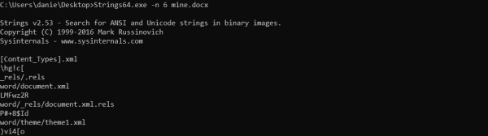

strings command (unstructured data)
The strings command displays printable
text from a file which is unstructured data for which the structure is unknown
Linux →
Included in most Linux/UNIX distributions
By default
strings looks only for printable ASCII
strings. focusing on ASCII strings of four or more characters in length.
Some documents types(especially
Microsoft Office documents) store informations as Unicode (a 16-bit character representation).
Unicode can be
Big endian or
little endian, depends to the way the bytes are ordered for the given string in the
file
We can use
grep to filter the output
OPTIONS:
-n <length> → To change the default minimum string length
-e b → specify encoding type for
Big-endian 16-bit characters
-e l → specify encoding type for
little-endian 16-bit
characters
Windows • component of Cygwin, the free POSIX environment for Windows
available at
www.cygwin.com.• Microsoft Sysinternals has an
implementation of strings called Strings available at
https://docs.microsoft.com/en-us/sysinternals/downloads/strings
By default
Strings.exe looks for ASCII, big-endian Unicode, and little-endian Unicode strings (pulling
them in a single invocation), focusing on strings of three or more characters in length.
To focus on only
ASCII or Unicode, the tool can be invoked with -a or -u
To filter the output we can use
| find /I 
C:\> Strings64.exe -n 6 mine.docx | find /I "word" #/I used in find if we want ingnore the case of the characters
